Minha história
E aí, Red! Meu nome é Mário, tenho 20 anos e moro na região de Itaquera. Estou cursando ciência da computação com ênfase em ciência de dados na Faculdade São Paulo Tech School. Sou torcedor do Liverpool e venho compartilhar dos sentimentos que sinto pelo clube com você. Vou contar isso por partes:
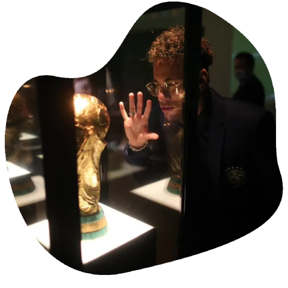
Quando comecei a torcer para o
Liverpool?
Antes de 2019 eu não acompanhava quase nada sobre futebol. Os
únicos eventos que eu assistia eram as Copas do Mundo, pois é
praticamente uma tradição do país: parar e assistir a Copa do
Mundo. Por mais que eu assistisse, eu não entendia nada do que
estava acontecendo ali. Eu não sabia quais jogadores eu poderia de
fato considerar bons ou ruins, não sabia quais eram os melhores
times e tampouco as regras. O que me ajudou a ter um panorama um
pouco melhor sobre futebol, foi a Copa do Mundo de 2018, na
Rússia, pois consegui acompanhar do início ao fim e aos poucos ir
me familiarizando com alguns conceitos do esporte ⚽.
Então...
No ano de 2019, eu recebi a oportunidade de assistir ao jogo do Liverpool pelas oitavas de finais da UEFA Champions League, onde o Liverpool enfrentava o Bayern de Munique. Ao assistir a vitória do time inglês sobre o time alemão, fiquei mais interessado em acompanhar a campanha do time naquela edição de UEFA Champions League, pois percebi valores que me agradavam: superação no momento difícil, inteligência emocional e uma atmosfera de jogo e torcida muito calorosa 🧠🔥♥.
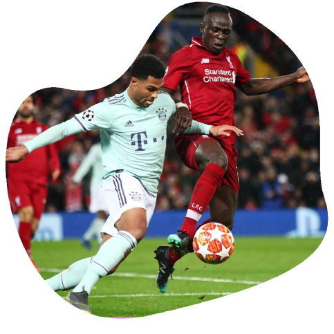
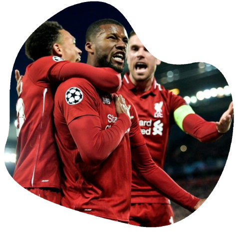
Incrivelmente marcante
Nas quartas de final daquela edição do campeonato, O Liverpool enfrentou o Barcelona, com o primeiro confronto sendo na casa do Barcelona. Este primeiro confronto ficou marcado por 3 a 0 a favor do Barcelona, o que deixava o time inglês em grande desvantagem para recuperar o placar. Além deste fator, o time contou com lesões de jogadores importantes: Mohamed Salah, Naby Keita e Roberto Firmino. No segundo confronto, eu acreditava muito na retomada dos ingleses sobre os espanhóis, mesmo que parecesse praticamente impossível para a maioria. E foi naquele momento que pude testemunhar um dos jogos mais emblemáticos e marcantes do clube, onde contou com heróis improváveis e o memorável lance do 4 a 0 vindo do pé de Trent Alexander-Arnold ♥💥.Não teve preço
Ver o time entregando o máximo de si, ver a comemoração, ver a torcida vibrando e cantando o hino You’ll Never Walk Alone (Você Nunca Andará Sozinho) foram fatores que me cativaram e me aproximaram ainda mais do time, pois foi o momento em que ainda eu não tinha a paixão pelo clube, e assistir aquele jogo me fez sentir como parte daquele momento, como parte da torcida e do clube ♥👣.
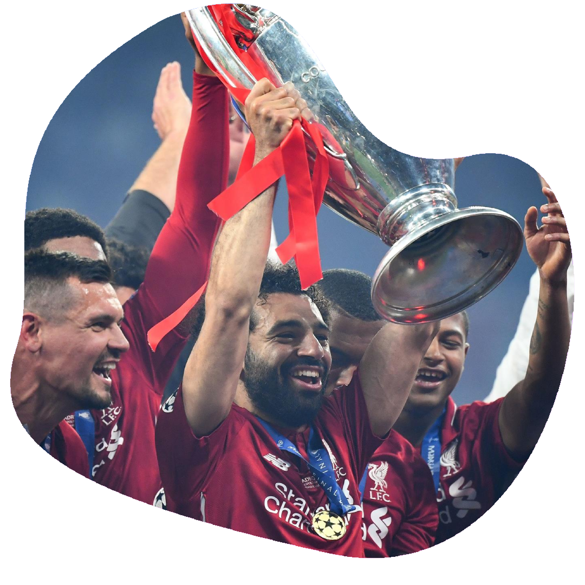
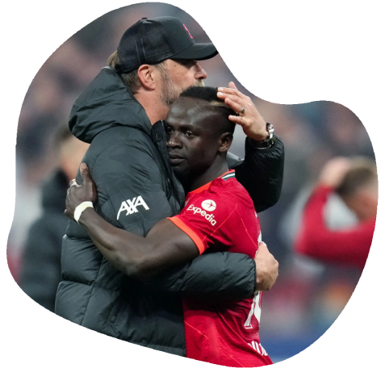
Eu decidi
Foi após este jogo que eu percebi que realmente queria torcer para o Liverpool e acompanhar os jogos e foi uma decisão que não me arrependo ♥✨.História do clube
Fundação do clube O Liverpool Football Club foi fundado em 3 de junho de 1892, após uma desavença entre o proprietário do estádio Anfield, John Houlding, e o Everton FC. Quando o Everton saiu de Anfield, Houlding decidiu formar um novo time para preencher o estádio. Inicialmente chamado de Everton Athletic, o clube foi renomeado para Liverpool Football Club e fez sua estreia na Lancashire League antes de ingressar na Football League em 1893.
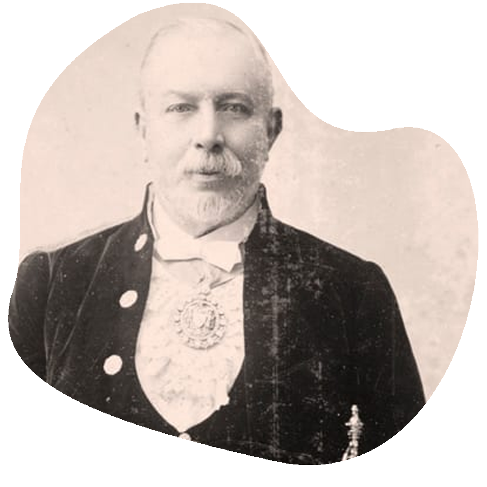
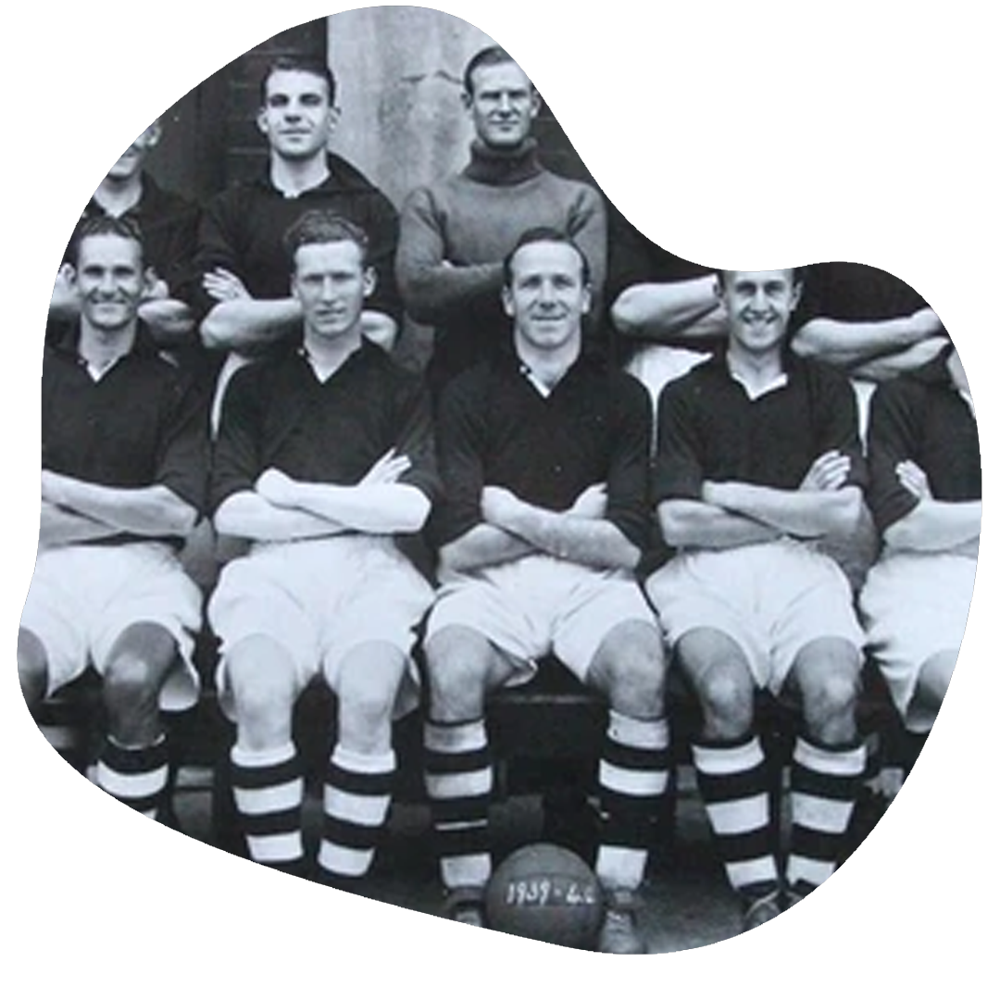
Primeiro Título da Liga (1901)
Em menos de uma década, o Liverpool se firmou como uma força
significativa no futebol inglês, conquistando seu primeiro título
da liga em 1901 sob o comando do técnico Tom Watson. Este sucesso
marcou o início de uma longa história de vitórias na liga, e o
Liverpool tornou-se um dos clubes mais competitivos da época.
A Era de Bill Shankly (1959–1974)
Quando Bill Shankly assumiu o Liverpool em 1959, o clube estava em uma fase difícil na Segunda Divisão. Shankly reformou o clube de forma profunda, inclusive estabelecendo uma cultura vencedora e criando a famosa "Sala Vermelha" (The Boot Room), onde os técnicos discutiam estratégias. Shankly conquistou três títulos da Primeira Divisão, duas FA Cups e uma Copa da UEFA, além de transformar o Liverpool em uma potência europeia e inglesa. Sua influência continuou mesmo após sua aposentadoria, com seus sucessores mantendo o clube no topo.
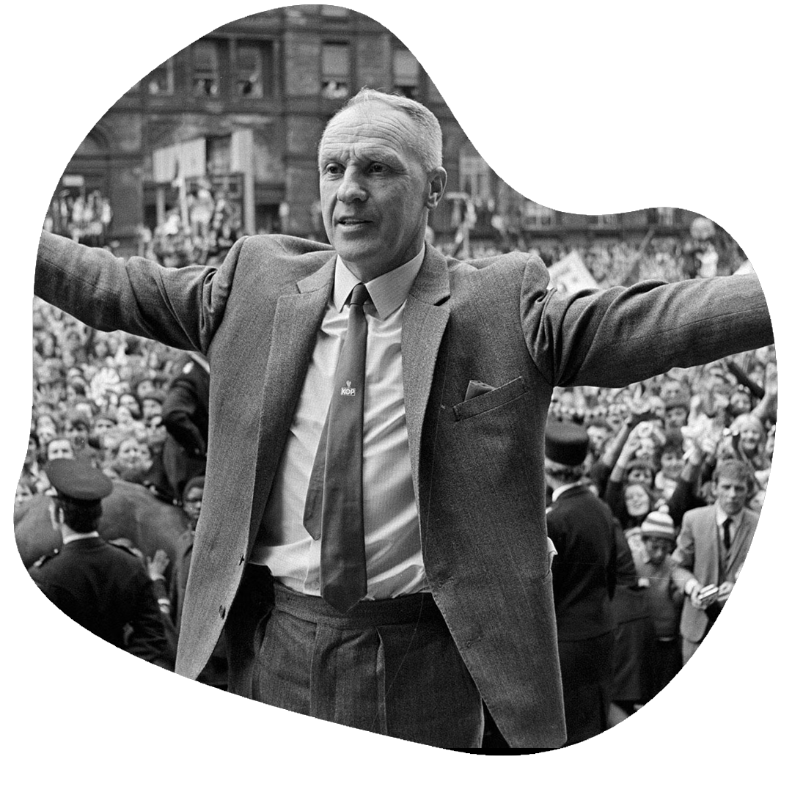
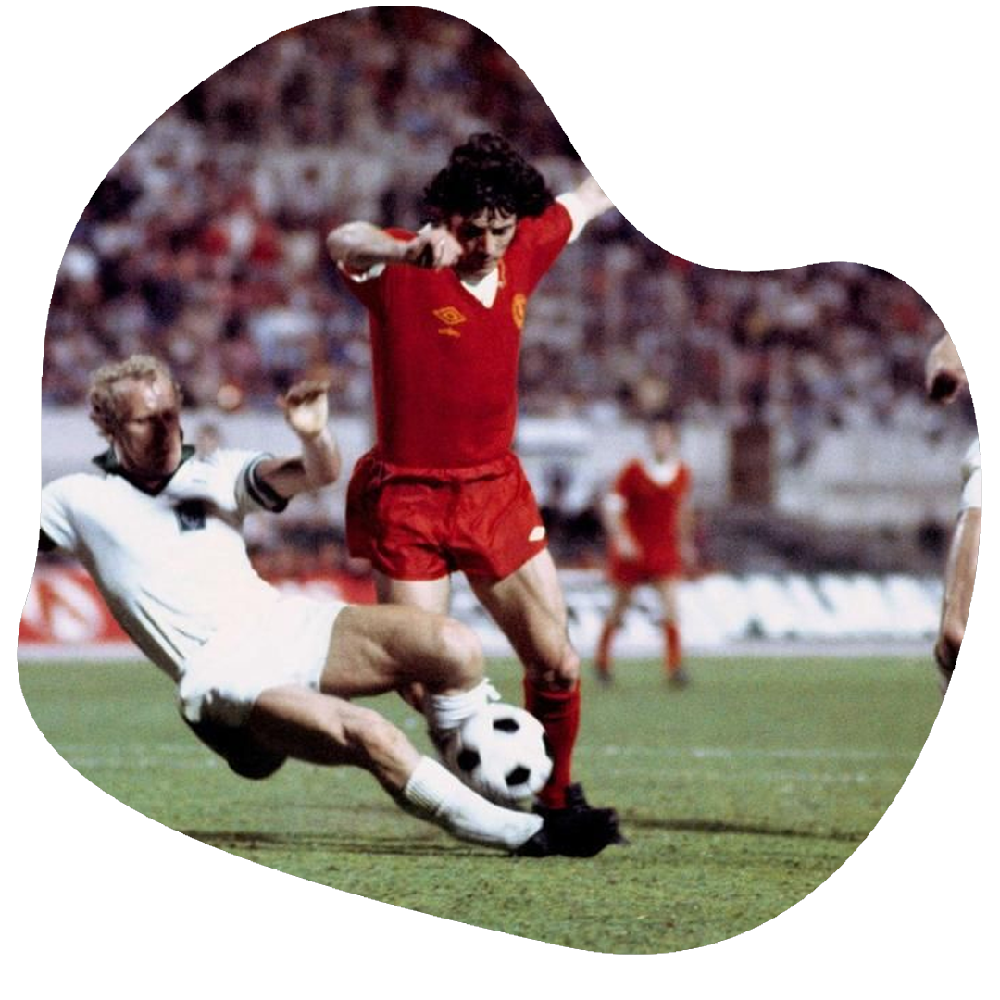
Primeira Taça dos Campeões Europeus (1977)
Sob o comando de Bob Paisley, o sucessor de Shankly, o Liverpool atingiu o auge da Europa ao conquistar sua primeira Taça dos Campeões Europeus em 1977, vencendo o Borussia Mönchengladbach por 3-1 em Roma. Paisley levou o Liverpool a mais duas conquistas europeias (em 1978 e 1981), estabelecendo o clube como um dos grandes do continente. Ao todo, Paisley conquistou seis títulos ingleses e três taças europeias, tornando-se uma lenda do clube.Tragédia de Hillsborough (1989)
No dia 15 de abril de 1989, 96 torcedores do Liverpool perderam a vida em uma superlotação durante a semifinal da FA Cup contra o Nottingham Forest, no estádio de Hillsborough. A tragédia gerou uma longa campanha por justiça para as famílias das vítimas e reformas significativas em estádios ingleses, com a remoção das áreas de pé para melhorar a segurança. O episódio marcou o clube e seus torcedores profundamente, com o lema "You’ll Never Walk Alone" se tornando um símbolo de solidariedade e união.
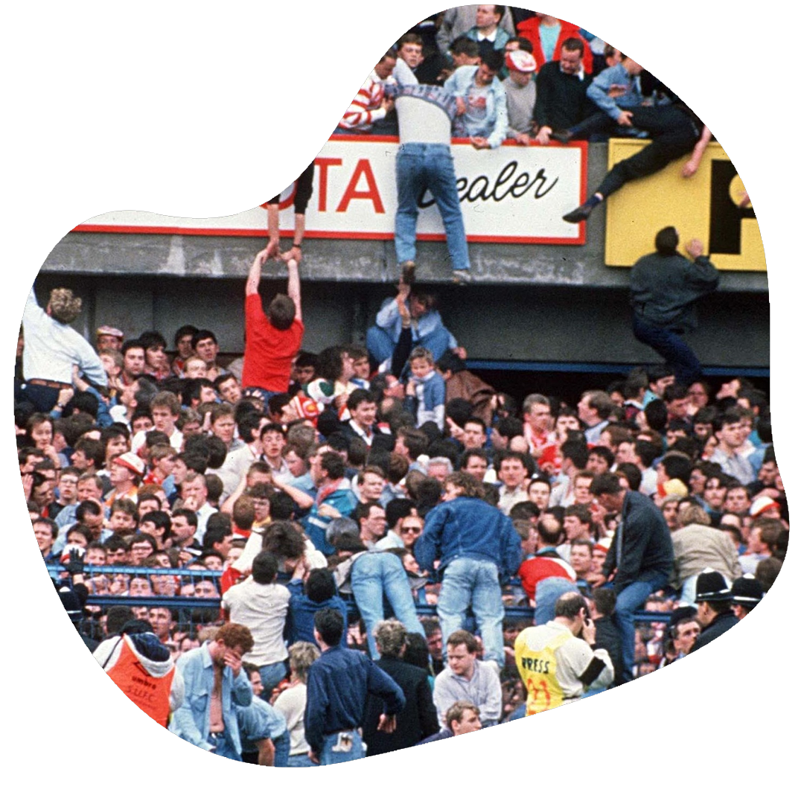
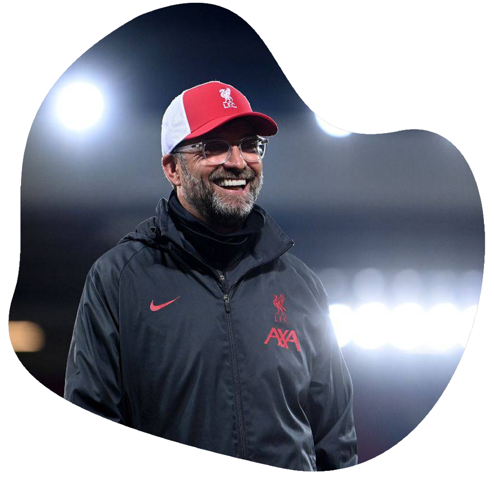
Ressurgimento com Jürgen Klopp (2015-2024)
No dia 15 de abril de 1989, 96 torcedores do Liverpool perderam a vida em uma superlotação durante a semifinal da FA Cup contra o Nottingham Forest, no estádio de Hillsborough. A tragédia gerou uma longa campanha por justiça para as famílias das vítimas e reformas significativas em estádios ingleses, com a remoção das áreas de pé para melhorar a segurança. O episódio marcou o clube e seus torcedores profundamente, com o lema "You’ll Never Walk Alone" se tornando um símbolo de solidariedade e união.A continuação de um legado - Era Arne Slot (2024)
Arne Slot assumiu o Liverpool em um momento de transição, trazendo uma abordagem tática moderna e um estilo de jogo ofensivo inspirado por sua bem-sucedida passagem pelo Feyenoord, onde havia conquistado a Eredivisie. Reconhecido por sua capacidade de desenvolver jogadores e implementar um esquema de pressão alta e rápida transição, Slot buscou revitalizar o elenco do Liverpool, combinando jovens talentos com jogadores experientes. Sua filosofia trouxe um novo dinamismo ao Anfield, onde a torcida viu o Liverpool competir novamente entre os melhores da Europa. Sob sua liderança, o clube buscou conquistar novas glórias e manter o legado de excelência, fazendo jus ao peso da camisa vermelha.
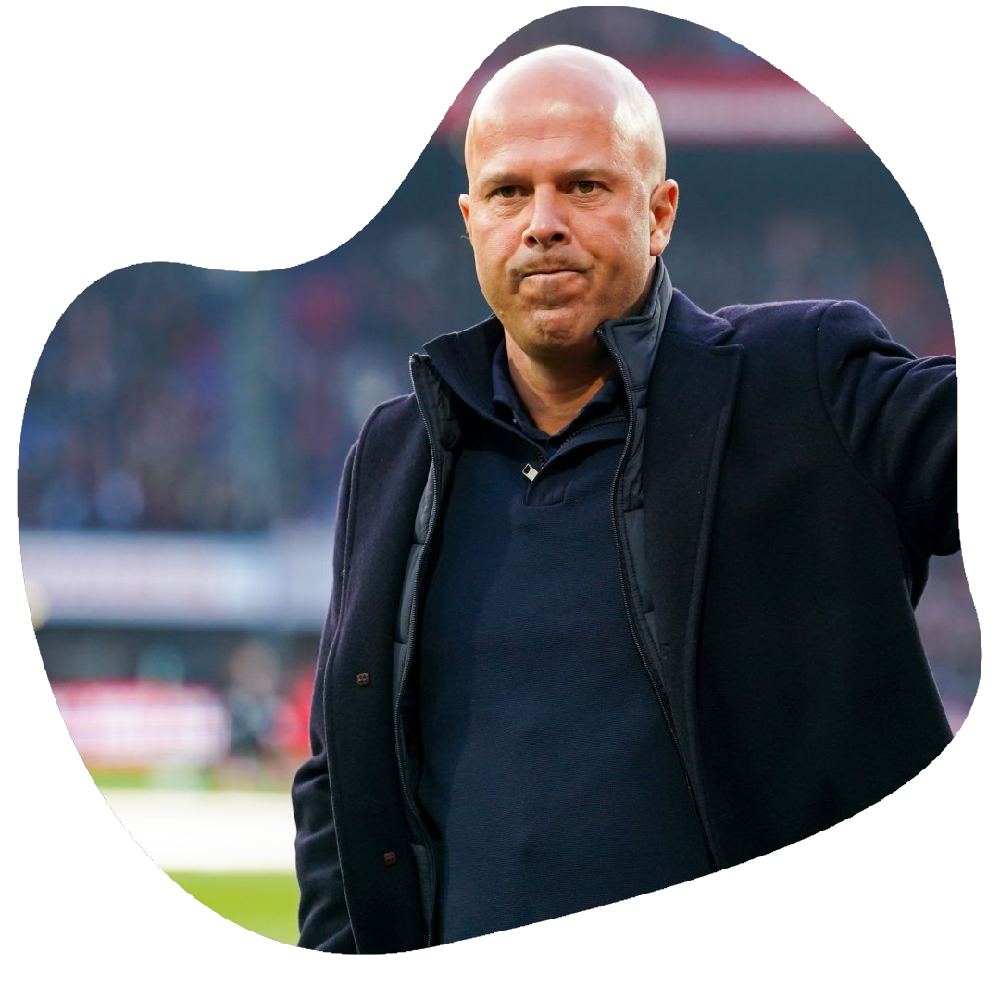